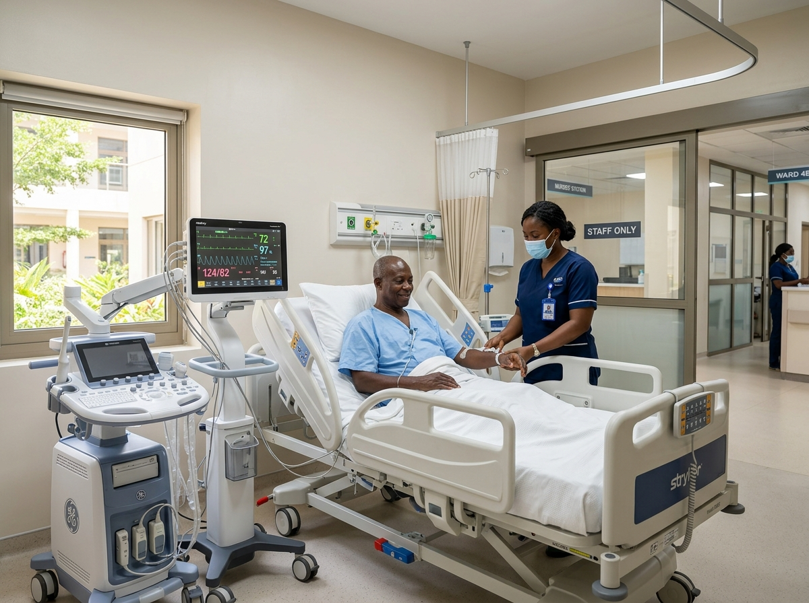
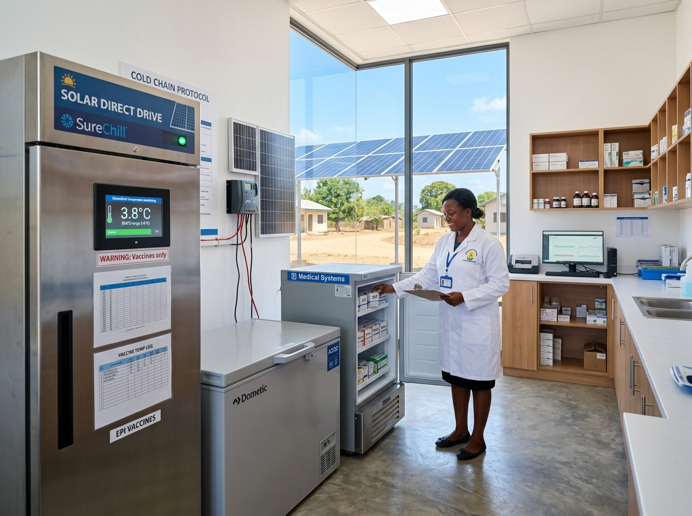
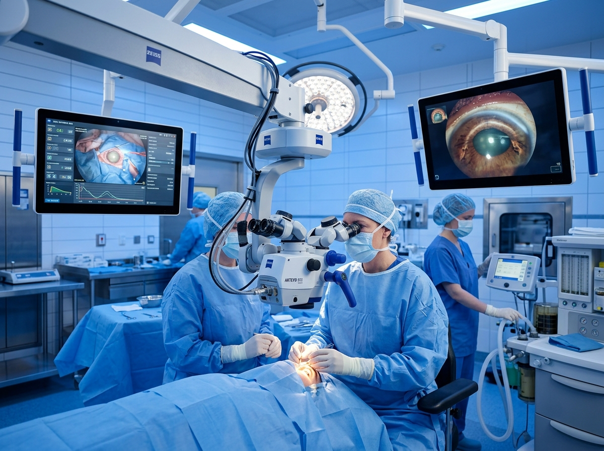
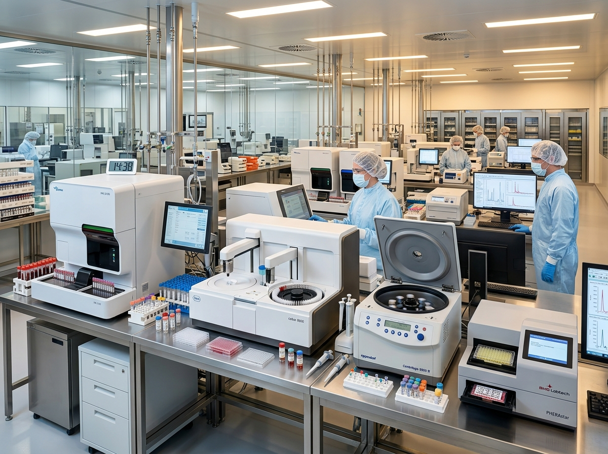
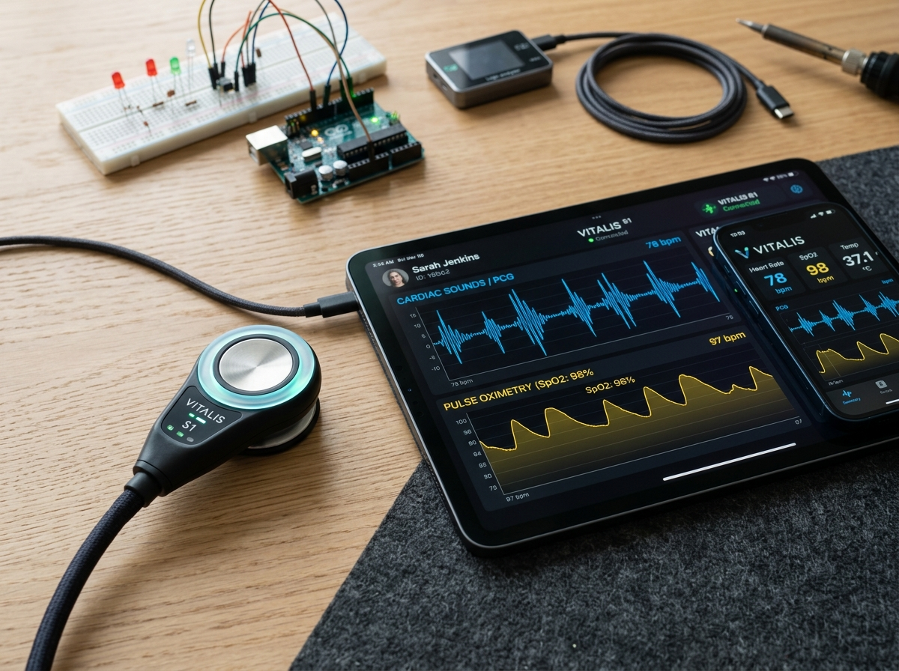

JE SUIS GLAD
Ingénieur biomédical et spécialiste système en biologie médicale, expert en maintenance, déploiement d'équipements hospitaliers de haute technologie, gestion d'atelier et pilotage de projets de santé publique d'envergure (Banque Mondiale ISMEA, GIZ ENDEV Santé, Leica Microsystems, GMAO).
Je suis Glad Jhinaldi Dellys MOUKOUIRI, Spécialiste Système Biologie Médicale & Ingénieur Biomédical
Diplômé d'un Master en Ingénierie Biomédicale et fort de plus de 6 années d'expérience sur le terrain au Sénégal et en Afrique centrale, j'interviens sur l'ensemble du cycle de vie des dispositifs médicaux : installation, maintenance préventive et curative, gestion d'atelier, traçabilité GMAO, et pilotage de projets d'envergure nationale et internationale (Banque Mondiale, GIZ, Direction des Laboratoires). Habilité Niveau 1 sur les microscopes ophtalmiques LEICA et certifié en Audit Qualité ISO 9001 et HSST (ISO 45001 / ISO 31000).
Mes Domaines d'Expertise
BIOLOGIE MÉDICALE & SYSTÈMES
Maintenance préventive et curative, diagnostic avancé, calibrage des analyseurs et automates de laboratoire, gestion de l'atelier de dépannage et approvisionnement en pièces détachées.
PILOTAGE DE PROJETS HOSPITALIERS
Direction d'opérations d'équipement complexes (Projet ISMEA Banque Mondiale : 242 équipements / 30 sites, ENDEV Santé : 120 frigos solaires, REDISSE : 98 sites, Hôpital ASFADAR).
MICROSCOPIE LEICA & BLOCS OPÉRATOIRES
Habilitation Niveau 1 Leica Microsystems (M220, M620, M822/M844, Proveo 8, BIOM, Slitlamp, RUV800), mise en service de tables de radiologie et équipement de blocs opératoires.
QUALITÉ ISO, HSST & GMAO
Auditeur interne certifié ISO 9001:2015, membre certifié CHSST (ISO 45001 & ISO 31000), déploiement et administration d'outils GMAO pour la traçabilité hospitalière et l'inventaire dynamique.
FORMATIONS & CERTIFICATIONS
Habilitation Microscopes LEICA – Niveau 1
Leica Microsystems — Field Service EngineerInstallation, maintenance préventive, dépannage et réparation des microscopes ophtalmiques et accessoires (M220 F12, M620 F20, M822/M844 F20/F40, Proveo 8, DIC800, BIOM, Slitlamp, RUV800).
Certification HSST (Santé & Sécurité au Travail)
Comité d'Hygiène, de Sécurité et des Conditions de TravailRéglementation SST, normes ISO 45001 et ISO 31000, évaluation des risques professionnels, 9 principes généraux de prévention et gestion des risques HSE en milieu hospitalier.
Certification Auditeur Interne Qualité
Système de Management de la Qualité — ISO 9001:2015Principes de l'audit qualité, préparation et conduite d'audits complets de bout en bout, libellé et classification des écarts, actions correctives et amélioration continue.
Master en Ingénierie Biomédicale
Université Polytechnique de l'Ouest Africain (UPOA, Dakar)Mémoire : « Conception et réalisation d'un stéthoscope connecté Yoka ». Maintenance hospitalière, électronique médicale, réglementation, conception de dispositifs médicaux et gestion de parc.
Licence Informatique & Électronique Industrielle
Institut Supérieur de Technologies Industrielles (IPG-ISTI, Dakar)Mémoire : « Étude et réalisation d'un oxymètre connecté à Android ». Systèmes automatisés, automates programmables industriels (API), instrumentation et interfaces hardware/logiciel.
Baccalauréat Technique Série E
Lycée Technique 5 Février 1979 (Congo)Filière d'excellence technologique : Mathématiques avancées, Physique appliquée et Technologie industrielle.
EXPÉRIENCE PROFESSIONNELLE
Spécialiste Système Biologie Médicale
Technologies Services — Dakar, SénégalMaintenance préventive & curative des équipements de biologie, gestion de l'atelier de dépannage, traçabilité GMAO, gestion des pièces détachées, formation des utilisateurs et contribution au SMQ ISO 9001.
Responsable Projet Biomédical
Technologies ServicesPilotage du Projet ISMEA (Banque Mondiale) : 242 équipements médicaux techniques installés dans 30 structures sanitaires (3 équipes terrain). Marché ENABEL (Labo national ARP) et intégration GMAO.
Technicien Biomédical Projet
Technologies ServicesÉquipement complet et mise en service de l'Hôpital International de Dakar (ASFADAR). Dispatching par service/étage, plannings d'installation et élaboration des protocoles de maintenance préventive.
Ingénieur Biomédical
ONG PATH & Direction des Infrastructures, Équipements et Maintenance (DIEM / Ministère de la Santé)Suivi de la stratégie nationale de maintenance et GMAO. Missions d'inauguration des hôpitaux de Kaffrine et Kédougou. Suivi national des installations d'équipements Covid-19.
Ingénieur Biomédical
Paramed Service LimitedÉtudes des besoins techniques, suivi du cycle de vie complet des dispositifs médicaux (installation sécurisée, maintenance, réforme).
Stages Hospitaliers & Immersion
Hôpital Principal de Dakar | Hôpital Albert Royer | DIEM CongoInstallation de tables de radiologie (MRS SARL), préparation du bloc opératoire pour la chirurgie de séparation de bébés siamois (Pr Gabriel NGOM), gestion de parc et documentation.
Compétences & Savoir-Faire Spécifiques





Témoignages et retours d'expérience de directeurs de projets de santé publique, responsables techniques, chirurgiens et partenaires institutionnels.
Dr. A. Diallo
Coordonnateur Projet Santé Publique, ISMEA / Banque Mondiale« La rigueur logistique et l'expertise technique de Glad ont été déterminantes pour déployer plus de 240 équipements dans 30 structures sanitaires à travers tout le Sénégal dans le respect strict des délais et standards internationaux. »
M. Fall
Responsable Technique & Maintenance, Technologies Services« Un spécialiste système autonome, méthodique et doté d'une excellente maîtrise des automates de biologie et des normes HSE. Sa gestion de l'atelier, la traçabilité GMAO et son encadrement des juniors sont exemplaires. »
Dr. K. Ndiaye
Chirurgien Ophtalmologiste, Centre Hospitalier Régional« L'intervention et les calibrations de Glad sur nos microscopes opératoires Leica ont été d'une précision irréprochable. Sa réactivité et sa pédagogie lors des formations d'utilisateurs en bloc opératoire font toute la différence. »
Ing. S. Traoré
Consultant Énergie & Santé, Projet ENDEV GIZ« Une coordination sans faille lors de l'installation des 120 réfrigérateurs solaires sur les 3 régions du nord (Saint-Louis, Matam, Louga). Glad allie sens aigu du terrain, respect des normes OMS et exigence qualité. »
Contactez Glad MOUKOUIRI !
Vous avez un projet d'équipement biomédical, un besoin de maintenance spécialisée, une mission d'audit qualité/HSST ou vous souhaitez collaborer ? Écrivez-moi !
EMAIL DIRECT
gladmoukouiri@gmail.comLOCALISATION & DISPONIBILITÉ
Dakar, Sénégal
Disponible pour missions sous-régionales & internationales